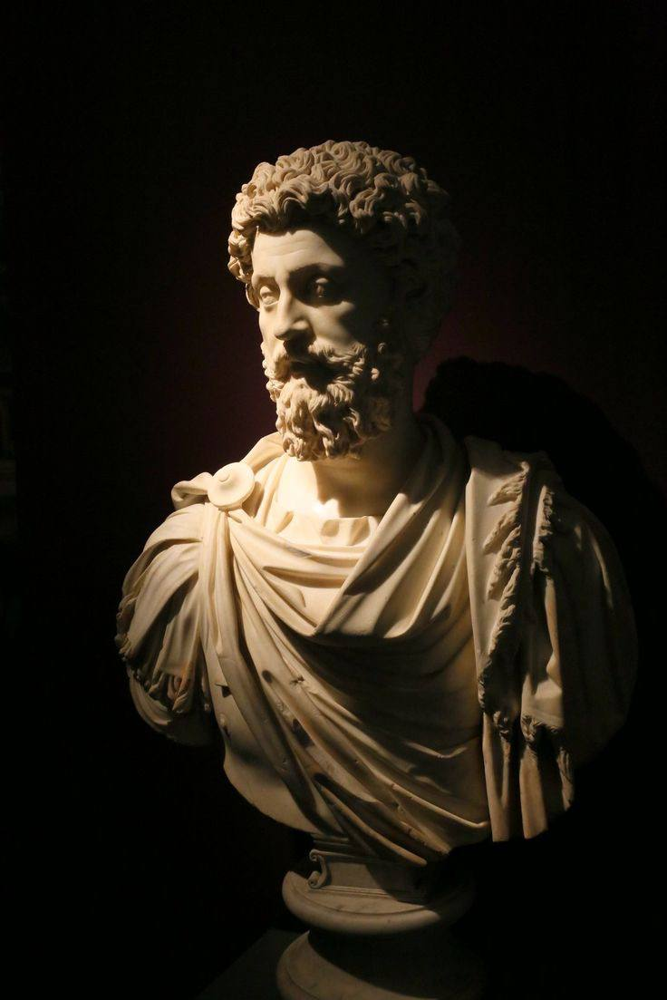
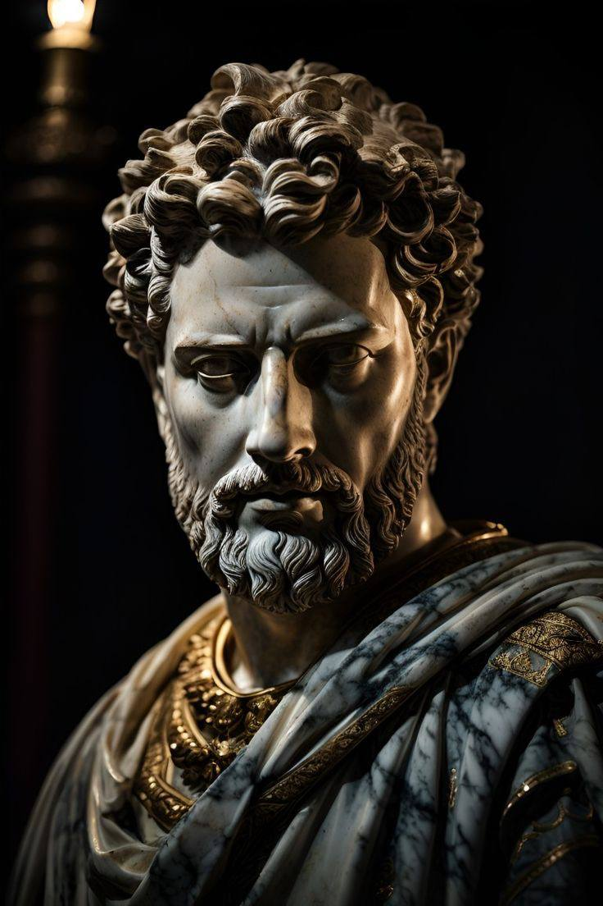
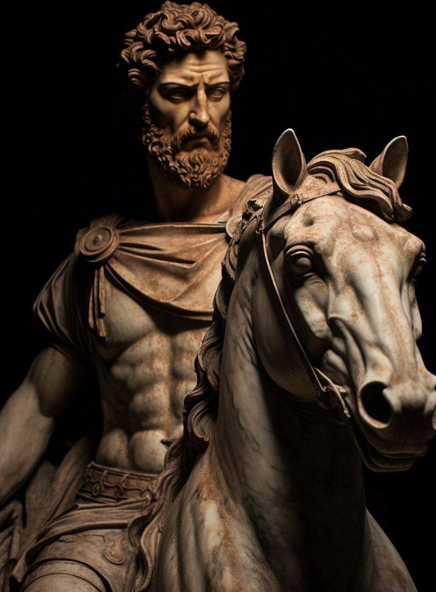

ROLE MODEL ~ MARCUS AURELIUS



SHORT BIO
- NAME : MARCUS AURELIUS ANTONIOUS AUGUSTUS
- DATE OF BIRTH : 26, 121 AD
- DATE OF DEATH : 17, 180 AD
- OCCUPATION: ROMAN EMPEROR & STOIC PHILOSOPHER
- REIGN : MARCUS AURELIUS RULED AS ROMAN EMPEROR FROM 161 TO 180 AD, DURING A PERIOD KNOWN AS THE PAX ROMANA (ROMAN PEACE).
- FAMILY : HE WAS BORN INTO A PROMINENT FAMILY ROMAN FAMILY, THE GENS AURELIA, AND WAS ADOPTED BY THE EMPEROR ANTONIUS PIUS.
- STOIC PHILOSOPHY : MARCUS AURELIUS IS KNOWN FOR HIS PHILOSOPHICAL WRITINGS, PARTICULARLY HIS WORK "MEDITATION", WHICH REFLECTS HIS STOIC BELIEFS AND OFFERS INSIGHTS INTO HIS PERSONAL REFLECTIONS ON LIFE, VIRTUE, AND LEADERSHIP.
- LEGACY : MARCUS AURELIUS IS OFTEN REMEMBERED AS ONE OF THE "FIVE GOOD EMPERORS" OF ROME, KNOWN FOR HIS WISDOM, STOICISM, AND COMMITMENT TO DUTY. HIS WRITINGS CONTINUE TO BE STUDIED AND ADMIRED FOR THEIR TIMELESS WISDOM AND ETHICAL GUIDANCE.